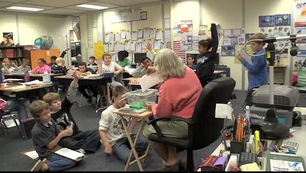

The water cycle is intended to engage elementary students substantively in scientific inquiry. Their conversation starts around the launching question:
One night it rains. When you go to school the next day, you notice a large puddle of water on the driveway. Later that day, when leaving school, you notice that the puddle is gone. What could have happened to the puddle?
Starting with their discussion of this question, students have the opportunity to explore many aspects of the water cycle. Because the water cycle is a responsive curriculum, what happens day to day in class depends on the ideas and issues that students bring up themselves, and the "next move" decisions the teacher makes based on those ideas. Consequently, the 'enacted' curriculum is likely to be different every time the teacher implements the curriculum for a new class. In our responsive teaching in science project, the water cycle was implemented in fifth-grade classrooms.
For the water cycle, we have one example of a teacher enacted trajectory implemented by Bonnie Paget-Milse in her fifth-grade classroom. The discussion of this implementation focuses on the demands that the responsive approach to instruction places on the teacher. It is part of the professional development section of the site. Several case studies are included in the PD section. The study of Bonnie's implementation is an extended case study; the PD section also includes small case studies, most of which are drawn from the water cycle.

Students discuss an experiment on evaporation and condensation inside an aquarium
with their teacher (Bonnie) and each other.